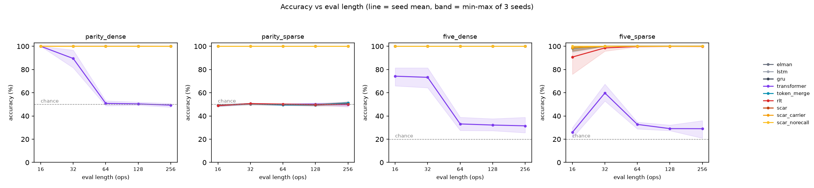
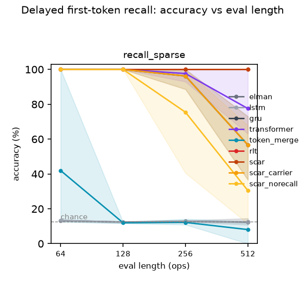
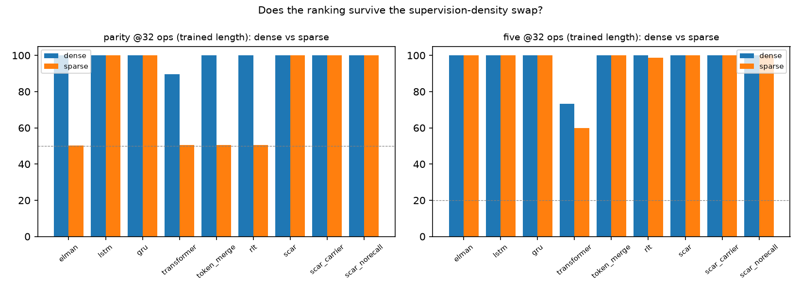

135 matched runs (~75–92K params): 9 architectures (incl. two SCAR
ablations) × parity/five/recall × dense/sparse supervision × 3 seeds.
All numbers below are machine-derived from results/*.json via
aggregate.py — see
the repo.
| model | params | parity_dense | parity_sparse | five_dense | five_sparse | recall_sparse |
|---|---|---|---|---|---|---|
| Elman RNN | 76,416 | 100.0±0.0 ≈ | 50.2±0.8 | 100.0±0.0 ≈ | 100.0±0.0 ≈ | 13.2±0.3 |
| LSTM | 75,648 | 100.0±0.0 ≈ | 100.0±0.0 ≈ | 100.0±0.0 ≈ | 100.0±0.0 ≈ | 13.3±0.5 |
| GRU | 77,280 | 100.0±0.0 ≈ | 100.0±0.0 ≈ | 100.0±0.0 ≈ | 100.0±0.0 ≈ | 100.0±0.0 ≈ |
| Transformer (full causal) | 76,608 | 89.5±7.7 | 50.6±0.4 | 73.3±8.6 | 59.8±7.3 | 100.0±0.0 ≈ |
| TokenMerge (RLT abl.) | 82,880 | 100.0±0.0 ≈ | 50.6±0.4 | 100.0±0.0 ≈ | 100.0±0.0 ≈ | 41.9±50.3 |
| RLT | 75,000 | 100.0±0.0 ≈ | 50.6±0.4 | 100.0±0.0 ≈ | 98.6±2.4 ≈ | 100.0±0.0 ≈ |
| SCAR | 77,896 | 100.0±0.0 ≈ | 100.0±0.0 ≈ | 100.0±0.0 ≈ | 100.0±0.0 ≈ | 100.0±0.0 ≈ |
| SCAR-carrier (no memory) | 77,280 | 100.0±0.0 ≈ | 100.0±0.0 ≈ | 100.0±0.0 ≈ | 100.0±0.0 ≈ | 100.0±0.0 ≈ |
| SCAR-no-recall | 78,710 | 100.0±0.0 ≈ | 100.0±0.0 ≈ | 100.0±0.0 ≈ | 100.0±0.0 ≈ | 100.0±0.0 ≈ |
Accuracy at the TRAINED length (parity/five: 32 ops; recall: 64 ops), mean±std over seeds. '≈' marks cells within seed noise of the best model in that column — those differences are indistinguishable. Chance: parity 50%, five 20%, recall 12.5%.
| model | params | parity_dense | parity_sparse | five_dense | five_sparse | recall_sparse |
|---|---|---|---|---|---|---|
| Elman RNN | 76,416 | 100.0±0.0 ≈ | 51.2±1.0 | 100.0±0.0 ≈ | 100.0±0.0 ≈ | 12.3±1.9 |
| LSTM | 75,648 | 100.0±0.0 ≈ | 100.0±0.0 ≈ | 100.0±0.0 ≈ | 100.0±0.0 ≈ | 12.6±1.7 |
| GRU | 77,280 | 100.0±0.0 ≈ | 100.0±0.0 ≈ | 100.0±0.0 ≈ | 100.0±0.0 ≈ | 56.6±18.5 |
| Transformer (full causal) | 76,608 | 49.3±1.6 | 49.8±1.8 | 31.5±6.7 | 29.0±7.6 | 77.5±19.7 ≈ |
| TokenMerge (RLT abl.) | 82,880 | 100.0±0.0 ≈ | 51.1±1.2 | 100.0±0.0 ≈ | 100.0±0.0 ≈ | 8.1±7.0 |
| RLT | 75,000 | 100.0±0.1 ≈ | 50.2±1.8 | 100.0±0.0 ≈ | 99.9±0.2 ≈ | 100.0±0.0 ≈ |
| SCAR | 77,896 | 100.0±0.0 ≈ | 100.0±0.0 ≈ | 100.0±0.0 ≈ | 100.0±0.0 ≈ | 100.0±0.0 ≈ |
| SCAR-carrier (no memory) | 77,280 | 100.0±0.0 ≈ | 100.0±0.0 ≈ | 100.0±0.0 ≈ | 100.0±0.0 ≈ | 56.6±18.5 |
| SCAR-no-recall | 78,710 | 100.0±0.0 ≈ | 100.0±0.0 ≈ | 100.0±0.0 ≈ | 100.0±0.0 ≈ | 30.5±32.4 |
EXTRAPOLATION: accuracy at the longest evaluated length (parity/five: 256 ops; recall: 512 ops), beyond the training length. No model was trained at this length.
| model | train ms/step | ×GRU | inference ms/batch@128 |
|---|---|---|---|
| Elman RNN | 23.3 [22.3–27.5] | 0.75x | 29.3 [27.0–48.4] |
| LSTM | 29.9 [28.7–47.2] | 0.96x | 36.3 [35.1–40.1] |
| GRU | 31.0 [30.0–46.8] | 1.00x | 33.2 [32.2–46.7] |
| Transformer (full causal) | 32.6 [31.6–35.2] | 1.05x | 102.5 [77.8–131.1] |
| TokenMerge (RLT abl.) | 217.6 [206.5–249.9] | 7.03x | 257.1 [246.6–316.2] |
| RLT | 243.7 [236.2–280.8] | 7.87x | 391.9 [367.9–442.2] |
| SCAR | 96.5 [92.6–127.0] | 3.12x | 104.8 [99.9–136.7] |
| SCAR-carrier (no memory) | 32.2 [31.2–41.1] | 1.04x | 33.7 [32.3–37.8] |
| SCAR-no-recall | 43.4 [42.4–63.4] | 1.40x | 64.7 [62.3–81.5] |
Dedicated serial benchmark (100 timed iters after 20 warmup, torch threads=2, batch=64, train len=32+BOS, infer len=128+BOS). Median [min–max] ms; treat as indicative ratios, not absolute numbers.



Generated by build_site.py from data/summary.json; no hand-typed numbers.